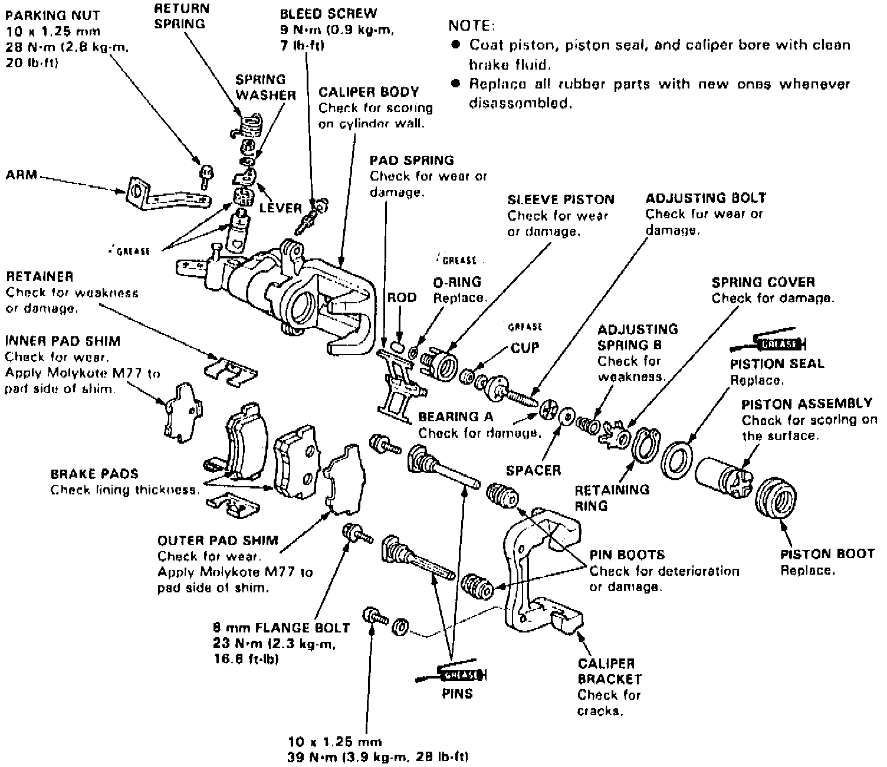
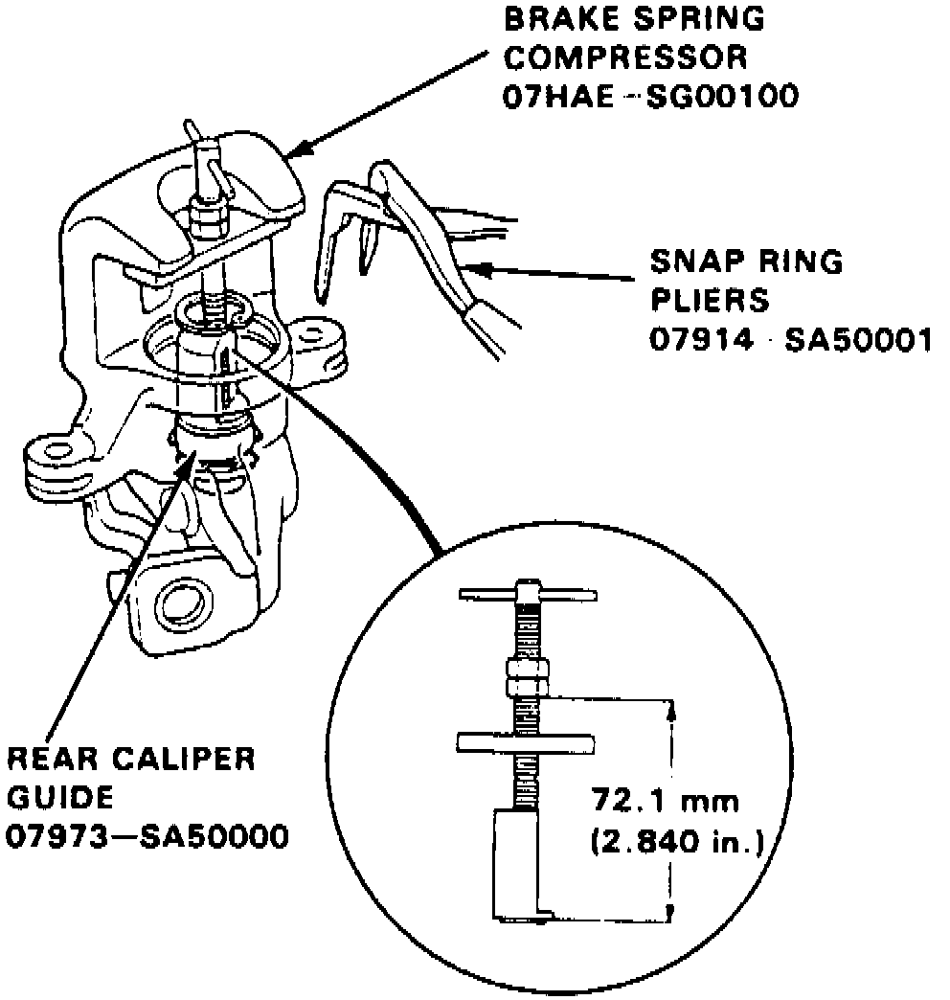

Removal and Disassembly
1. Raise and support rear of vehicle and remove wheels.2. Remove caliper shield, then disconnect parking brake cable from caliper.
3. Remove banjo bolt and disconnect brake line from caliper. Secure hose in raised position to prevent leakage.
Fig. 5 Exploded View Of Rear Disc Brake Assembly:

4. Remove caliper mounting bolts and caliper, Fig. 5.
5. Remove pad spring from caliper.
6. Remove piston and piston boot using tool No. 07916-6390001, or needle nose pliers. Rotate piston as it is removed.
7. Remove circlip, washer, adjusting spring and adjusting nut from piston.
8. Carefully pry piston seal out of caliper bore.
Fig. 7 Brake Spring Removal:

9. Position brake spring compressor tool between caliper body and spring cover, Fig. 7.
10. Turn shaft of tool to compress adjusting spring, then remove circlip or retaining ring.
11. Remove spring cover, adjusting spring, spacer, bearing, adjusting bolt, sleeve piston and rod.
12. Remove return spring, parking nut, spring washer, lever, cam and cam boot.